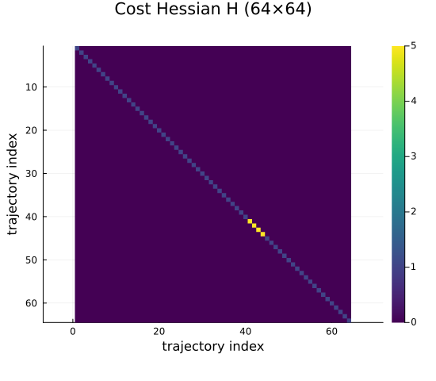
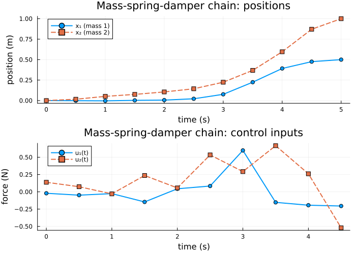

Controlled Trajectory Examples: 4 — Mass-Spring-Damper Chain
This is the fourth and final example in the controlled-trajectory progression. The third example showed a single-agent system with physically coupled state coordinates. Here we return to a graph-structured mechanical system: a chain of masses connected by springs and dampers.
Physical system
Two unit masses are connected in a chain anchored to a fixed wall at the left end. Each mass can be driven by an external force:
wall ─[k,c]─ m₁ ─[k,c]─ m₂
↑ ↑
u₁ u₂With per-mass state $x_i = [x_i, \dot{x}_i]^\top$ stacked as $x = [x_1, \dot{x}_1, x_2, \dot{x}_2]^\top$, and control $u = [u_1, u_2]^\top$, Newton's second law gives $\dot{x} = A_c x + B_c u$ with
\[A_c = \begin{bmatrix} 0 & 1 & 0 & 0 \\ -2k & -2c & k & c \\ 0 & 0 & 0 & 1 \\ k & c & -k & -c \end{bmatrix}, \qquad B_c = \begin{bmatrix} 0 & 0 \\ 1 & 0 \\ 0 & 0 \\ 0 & 1 \end{bmatrix}.\]
Why the diagonal blocks are different
Mass 1 is attached to both the fixed wall and mass 2, giving three force contributions to its velocity equation:
\[\ddot{x}_1 = \underbrace{-k x_1 - c \dot{x}_1}_{\text{wall spring/damper}} + \underbrace{k(x_2 - x_1) + c(\dot{x}_2 - \dot{x}_1)}_{\text{inter-mass coupling}} + u_1 = -2k x_1 - 2c \dot{x}_1 + k x_2 + c \dot{x}_2 + u_1.\]
Mass 2 is attached only to mass 1 (free right end), so it has two contributions:
\[\ddot{x}_2 = \underbrace{k(x_1 - x_2) + c(\dot{x}_1 - \dot{x}_2)}_{\text{inter-mass coupling}} + u_2 = k x_1 + c \dot{x}_1 - k x_2 - c \dot{x}_2 + u_2.\]
The coefficients $(-2k, -2c)$ in mass 1's row versus $(-k, -c)$ in mass 2's row reflect this asymmetry: mass 1 is "grounded" at the wall, while mass 2 is free. The coupling submatrix for positions is the grounded Laplacian $\hat{L} = \begin{bmatrix} 2k & -k \\ -k & k \end{bmatrix}$, which equals the standard path-graph Laplacian $k \begin{bmatrix} 1 & -1 \\ -1 & 1 \end{bmatrix}$ plus a diagonal "anchor" term $k \operatorname{diag}(1, 0)$ for the wall attachment. The off-diagonal coupling blocks are symmetric by Newton's third law.
References:
- Olfati-Saber, R. & Murray, R. M. (2004). "Consensus Problems in Networks of Agents with Switching Topology and Time-Delays." IEEE Transactions on Automatic Control, 49(9), 1520–1533. DOI:10.1109/TAC.2004.834113
- Lewis, F. L., Vrabie, D. L., & Syrmos, V. L. (2012). Optimal Control, 3rd ed. John Wiley & Sons. ISBN 978-0-470-63349-6.
using CellularSheaves
using LinearAlgebra
using BlockArrays
using Plots
using SparseArraysStep 1: Physical parameters and continuous-time model
k_spring = 1.0 # spring constant (N/m)
c_damp = 0.2 # damper coefficient (N·s/m)
mass = 1.0 # mass of each particle (kg)
Ac = [0.0 1.0 0.0 0.0;
-2k_spring -2c_damp k_spring c_damp;
0.0 0.0 0.0 1.0;
k_spring c_damp -k_spring -c_damp]
Bc = [0.0 0.0;
1.0/mass 0.0;
0.0 0.0;
0.0 1.0/mass]
println("State dimension n = ", size(Ac, 1))
println("Control dimension m = ", size(Bc, 2))State dimension n = 4
Control dimension m = 2Verify the grounded-Laplacian structure of the position coupling: In the second-order form, the acceleration contains the term -L̂ * x, so the (velocity rows, position columns) block of Ac equals -L̂.
L_hat = Ac[[2, 4], [1, 3]]
println("Position coupling block (should equal -L̂):\n", L_hat)Position coupling block (should equal -L̂):
[-2.0 1.0; 1.0 -1.0]L̂_expected = k_spring .* [2.0 -1.0; -1.0 1.0]
@assert L_hat ≈ -L̂_expected "Grounded-Laplacian structure does not match expected pattern (sign convention)"Step 2: Build the ControlledTrajectorySheaf
We use a two-vertex base sheaf, one vertex per mass. Each vertex carries a 2-dimensional stalk (position and velocity), giving a total state dimension of 4. This mirrors the structure of the spring network: the two-vertex base sheaf has the same topology as the path graph $1 - 2$.
h = 0.5 # sample period (seconds)
k = 10 # number of time steps
F = EuclideanSheaf{Float64}([2, 2]) # two vertices, each 2D (pos, vel)
ts = ControlledTrajectorySheaf(F, Ac, Bc, h, k)
n = ts.state_dim # 4
m_dim = ts.control_dim # 2
println("ZOH step h = ", h, " s, steps k = ", k)ZOH step h = 0.5 s, steps k = 10Step 3: Fix endpoint states
Both masses start at rest at natural length. We push them to a compressed configuration and return them to rest at a displaced equilibrium.
x1 = [0.0, 0.0, 0.0, 0.0] # at rest at natural length
xk1 = [0.5, 0.0, 1.0, 0.0] # mass 1 at 0.5 m, mass 2 at 1.0 m, both at rest4-element Vector{Float64}:
0.5
0.0
1.0
0.0Step 4: Assemble the LQR objective
Q = Matrix{Float64}(I, n, n)
Ru = Matrix{Float64}(I, m_dim, m_dim)
Qf = 5.0 * Matrix{Float64}(I, n, n)
H, f, _ = lqr_objective(ts, Q, Ru; Qf=Qf)(sparse([1, 2, 3, 4, 5, 6, 7, 8, 9, 10 … 55, 56, 57, 58, 59, 60, 61, 62, 63, 64], [1, 2, 3, 4, 5, 6, 7, 8, 9, 10 … 55, 56, 57, 58, 59, 60, 61, 62, 63, 64], [1.0, 1.0, 1.0, 1.0, 1.0, 1.0, 1.0, 1.0, 1.0, 1.0 … 1.0, 1.0, 1.0, 1.0, 1.0, 1.0, 1.0, 1.0, 1.0, 1.0], 64, 64), [-0.0, -0.0, -0.0, -0.0, -0.0, -0.0, -0.0, -0.0, -0.0, -0.0 … -0.0, -0.0, -0.0, -0.0, -0.0, -0.0, -0.0, -0.0, -0.0, -0.0], 0.0)Visualize the block-diagonal structure of H. The state trajectory has (k+1) blocks of size 4 and k control blocks of size 2, giving H of size ((k+1)4 + k2) × ((k+1)4 + k2) = 64×64. The upper-left square carries the state weights Q (×k) and Qf (terminal); the lower-right square carries the control weights Ru (×k).
p_H = heatmap(Matrix(H);
color=:viridis, colorbar=true,
title="Cost Hessian H ($(size(H,1))×$(size(H,2)))",
xlabel="trajectory index", ylabel="trajectory index",
yflip=true, aspect_ratio=:equal, size=(550, 480))
p_H
Step 5: Solve for the optimal trajectory
z_opt, α_opt, z_p, null_basis = optimal_control_trajectory(ts, x1, xk1, H, f)
println("Free parameters r = ", size(null_basis, 2))Free parameters r = 10Step 6: Plot positions and control inputs
times_state = h .* (0:k)
times_control = h .* (0:k-1)
pos1 = [Array(z_opt[Block(t)])[1] for t in 1:k+1]
vel1 = [Array(z_opt[Block(t)])[2] for t in 1:k+1]
pos2 = [Array(z_opt[Block(t)])[3] for t in 1:k+1]
vel2 = [Array(z_opt[Block(t)])[4] for t in 1:k+1]
u1 = [Array(z_opt[Block(k+1+t)])[1] for t in 1:k]
u2 = [Array(z_opt[Block(k+1+t)])[2] for t in 1:k]
p_pos = plot(times_state, pos1;
lw=2, marker=:circle, label="x₁ (mass 1)",
xlabel="time (s)", ylabel="position (m)",
title="Mass-spring-damper chain: positions")
plot!(p_pos, times_state, pos2;
lw=2, marker=:square, linestyle=:dash, label="x₂ (mass 2)")
p_ctrl = plot(times_control, u1;
lw=2, marker=:circle, label="u₁(t)",
xlabel="time (s)", ylabel="force (N)",
title="Mass-spring-damper chain: control inputs")
plot!(p_ctrl, times_control, u2;
lw=2, marker=:square, linestyle=:dash, label="u₂(t)")
msd_plot = plot(p_pos, p_ctrl; layout=(2, 1), size=(700, 500))
msd_plot
Verification
@assert Array(z_opt[Block(1)]) ≈ x1 "Initial state not satisfied"
@assert Array(z_opt[Block(k + 1)]) ≈ xk1 atol=1e-8 "Terminal state not satisfied"
for t in 1:k
xt = Array(z_opt[Block(t)])
xt1 = Array(z_opt[Block(t + 1)])
ut = Array(z_opt[Block(k + 1 + t)])
residual = norm(ts.Ad * xt + ts.Bd * ut - xt1)
println("Dynamics violation at step $t\t$residual")
endDynamics violation at step 1 6.11908952832139e-17
Dynamics violation at step 2 1.9645312551903404e-17
Dynamics violation at step 3 6.355459596694414e-17
Dynamics violation at step 4 1.1560340935597252e-16
Dynamics violation at step 5 1.5027151625620984e-16
Dynamics violation at step 6 2.3714374201337736e-16
Dynamics violation at step 7 3.3766115072321297e-16
Dynamics violation at step 8 2.0014830212433605e-16
Dynamics violation at step 9 6.78877776696119e-16
Dynamics violation at step 10 7.152111528976949e-16What this example adds
The mass-spring-damper chain closes the progression by reconnecting to the network-structured problems for which cellular sheaves are most naturally suited:
- The state dimension (4) exceeds the single-agent double integrator (2), demonstrating that the same API scales to coupled mechanical systems.
- The coupling submatrix of $A_c$ is the grounded Laplacian $\hat{L} = k L_G + k \operatorname{diag}(1, 0)$, where $L_G$ is the combinatorial Laplacian of the path graph $1 - 2$. The extra diagonal entry arises from the wall attachment of mass 1; without it the submatrix would be the standard Laplacian.
- The two-vertex base sheaf mirrors the physical coupling topology, making the connection between mechanical networks and sheaf networks explicit.
From here, the natural next steps are:
- Sheaf-theoretic consensus algorithms on the same path graph.
- Formation control using the coupling structure encoded in the sheaf restriction maps.
- Multi-agent optimal control with shared edge constraints (sheaf sections as agreement conditions).